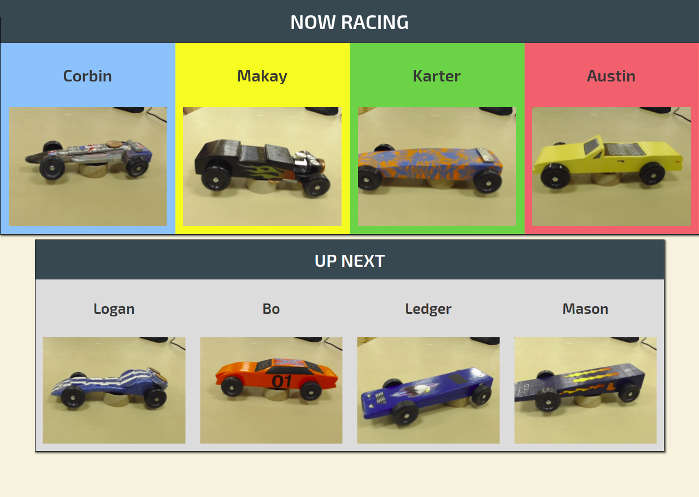
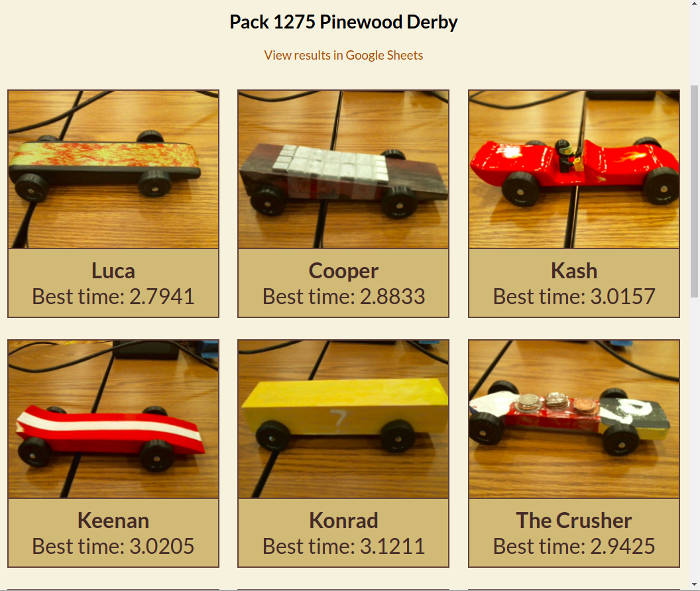
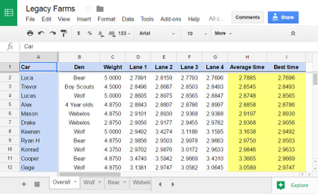

Information for Leaders
Frequently Asked QuestionsPreparing for your Pinewood Derby
To prepare for your derby, decide on a date, place, and time, and make a reservation with us. Decide who will participate. Pinewood derbies are also fun events for older youth and adults.
Provide a pinewood derby car kit for each participant, or ensure participants know where to get one. We also have LEGO kits for participants to use if they are not able to build a car before the race. Siblings are welcome to also build a car and race it during practice time, but we recommend allowing only official participants to race in the main event. Instruct participants to make sure to design their cars to the correct specifications. It is very important to leave enough clearance underneath the car. You can find the required clearances and other tips on how to build a pinewood derby car on the Information for Participants page.
Recommended minimum clearances for pinewood derby cars.
Packs differ as to the chosen rule set and level of enforcement. The most important specifications are for the cars to not be overweight, and to maintain adequate clearance under the car. Regardless of which rule set you enforce (or none at all), we do not allow liquid lubricants since these can damage the track surface. We also do not allow anything which may put the track or bystanders at risk.
If you have more than about 20 cars, we strongly recommend weighing the cars in the night before your event. You can also check in the cars beforehand using our mobile check-in. If you can't hold a separate weigh-in, ask participants to try to arrive early. You are more likely to start your event on time if you do not have to wait for participants to adjust the weights on their cars.
Decorations, awards, and refreshments are as important as the race itself. The pinewood derby is much more than just another pack meeting. Make this event special.
Planning Checklist
- Reservation made and confirmed
- Schedule building/facility
- Invite participants
- Provide pinewood derby car kits
- Provide instruction or help building the cars (see Information For Participants)
- Plan for any decorations, awards, and refreshments
What to Expect on Race Day
Room Setup
About 45 minutes before the event begins, we will set up our track and timing system at your facility. You will need to provide tables and chairs. The images below are two possible room layouts. The track requires an open area of at least 15' x 40' (not including seating). Traffic cones, provided by us, are used to form a safety perimeter around the track.


You should have a table designated for participants to place their cars before and during the race. You may want to set each car on a paper plate so it doesn't roll off. You may also want another table for making adjustments or adding graphite. You will want to cover these tables with a disposable table cloth so that graphite from the cars does not stain the table. You may also want to have additional tables for refreshments and awards. We will also need a small table or two for our equipment. If you want to use the LEGO car kits as part of your event, you will need additional tables.
We also recommend using a microphone before, during, and after the race. The emcee typically stands at the head of the track near the projector screen. We will often invite the participants to share something about their cars during the race.
Setup Checklist
- Building opened 45 minutes prior to event
- Chairs
- Long table for weighing, adjustments, repairs, and graphite, with disposable table cloth
- Long table to safely store cars when not racing
- Table(s) for building LEGO cars (if desired)
- Two small tables, or one long table, for track equipment
- Scale (we can provide one if you do not have one)
- Extra weights, graphite, and tools
- Microphone, if available
- Refreshments, decorations, and awards, if desired
The Main Event
As participants arrive, they should make adjustments to weight and verify their car will roll freely on the track. An adult volunteer should verify that all cars are 5 ounces or less. If you have more than about 20 cars, it is a good idea to hold a separate weigh-in before the event. You do not need to provide us with a list of names or assign numbers to the cars.
It's a good idea to have a gathering activity for participants while they are waiting for the event to start. You may use the LEGO building station for this.

If you are doing an open format LEGO derby, participants can begin building, racing, and modifying their cars as soon as they arrive. If you wish, you may then transition into a more traditional event once the designs are solidified.
All cars must be checked in before the race using mobile check-in. We might ask for an adult volunteer who is comfortable using a phone to assist checking in the cars. We will display all of the checked in cars on the screen before the race to make sure no one has been forgotten. Additional cars can be checked in even after the race has started. If you are having a weigh-in before the day of the event, you can save time on race day by checking the cars in online during the weigh-in.
Once the participants have arrived and their cars have been weighed, you can hold your opening ceremony. You can award your regular Cub Scout awards at this time, but avoid taking too much time doing so.
After all cars have been checked in, we will give a few instructions to the participants before beginning the race. Lane assignments are generated automatically. During the event, the four cars that are up to race will be shown on the projector screen. The next four cars ("on deck") are also shown. As each race concludes, the participants should retrieve their cars and take them back to the designated table.

In our standard race format, each car races at least once on each of the four lanes, and sometimes more if time allows. For 20 participants, this takes about 20 minutes. If you are preparing customized certificates for the cars, you may do so during the race. Visit our results page to find names and pictures of all the cars.

After all the races are complete, the results will be available on our results page. The cars are ranked based on their fastest time. You can view overall rankings as well as rankings grouped by den or age-group.

You should conclude your event with an awards ceremony. In addition to first, second, and third prize, you may also want to have special awards for each participant. We do not provide awards or trophies, but we will play awesome music while you present the awards. After the ceremony, we will leave our track set up for the remaining time to allow for some races just for fun. This is a great time to invite siblings and others to race extra cars or LEGO cars.
Main Event Checklist
- As participants arrive: weigh cars, make final adjustments, test run on track, mobile check-in
- LEGO car building or gathering activity
- Opening ceremony
- Cub Scout awards, if any
- Verify all cars have been checked in
- Race begins
- During the race, assign customized awards, if desired (Pictures of each car will be available on our results page)
- View the final results on the results page
- Awards ceremony
Frequently Asked Questions
At the chosen time, we can stream the race on YouTube, or share the video file with you beforehand so you can play it on a Zoom call with the participants. If you are planning on doing a virtual derby, please contact us well in advance to discuss all the details. For an example, here is the video from a virtual derby we held for Pack 707 of Provo, UT: https://youtu.be/HNSXYDPw_1I